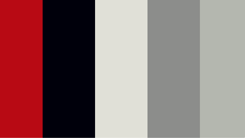

moodboard
My take on inspirational moodboard for Bauhaus style, reflecting the most emphasized elements of this style.
COLOUR SCHEME AND SHAPES
One of the school’s most famous thinkers and artists, Wassily Kandinsky, strove for a universal aesthetic: a visual style that would transcend cultural differences and language barriers. He believed certain shapes and colors complemented each other and communicated a specific idea or emotion to the viewer. For example, he believed yellow and the triangle were natural partners: they strengthen each other’s sharpness. He tested his students on this theory, presenting them with a circle, square, and triangle alongside the colors red, blue, and yellow (blue, a spiritual color, corresponded with the circle while red, an earthbound color, corresponded with the square.)
The Bauhaus style is recognized by the 5 main colors - black, white, yellow, blue and red. Below are examples of Bauhaus colors pallettes

My take on Bauhaus color scheme and chosen palette:
TYPOGRAPHY
In the world of graphic design, typography is perhaps the Bauhaus’ great legacy. For the Bauhaus, the words were an integral graphic element. They were architectural — like a chair in a room — functioning on their own, as words, and as artistic tools in the space.
Bauhaus typographers were pioneers of wrapping text, and of setting words at sharp angles. But again, the meaning of the words always came first, clever design second. Bayer’s universal alphabet was all lower-case and sans serif: simple and legible. It was a typeface for everyone.
I think font family Raleway is a great font in order to represent Bauhaus style. It is simple, clean, sans serif, minimalistic. The main purpose of typeface is to make text accessible and this font fits the most essential elements and is legible.
LOGO
Logo of the website was created based on my personal preference, however, it is in accordance with Bauhaus style as well.
Logo from sketched idea to the chosen option.
EXAMPLES OF IMAGE ASSETS
Small – 500 pixels; png; lossless compression
Medium – 1000 pixels; png; lossless compression
Large - 1500 pixels; png; lossless compression
VISUALISATION
Visualisation of entire web sructure